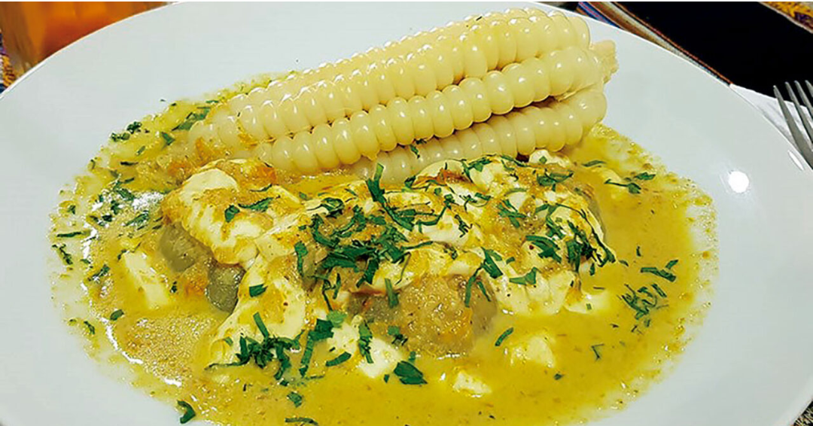
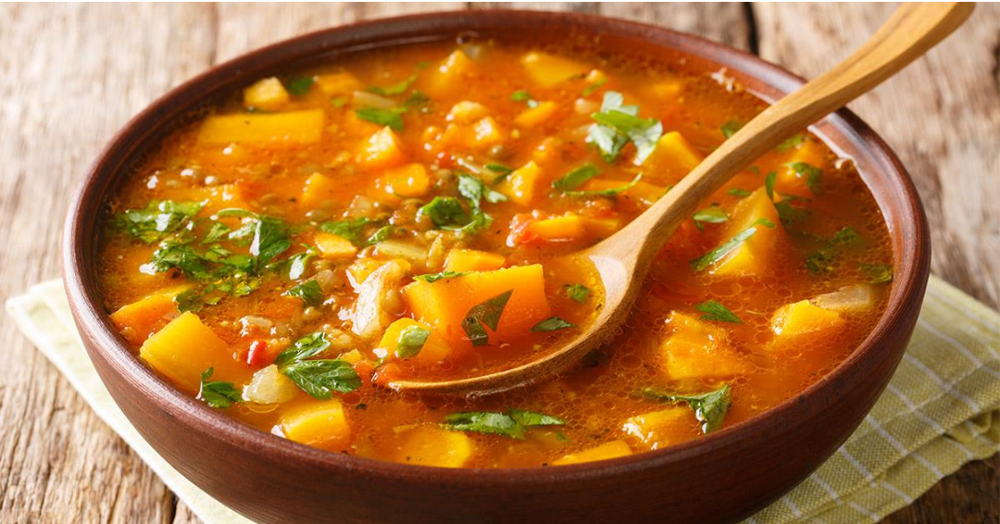
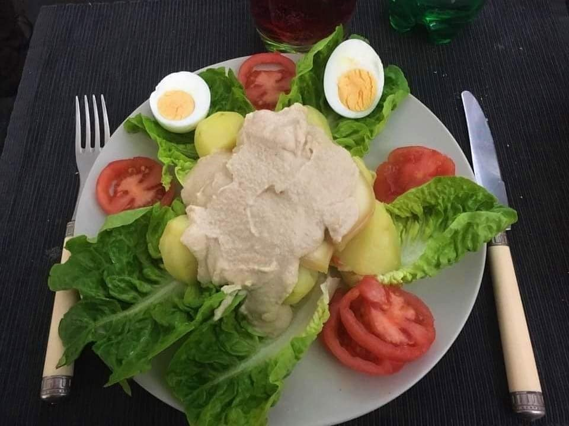
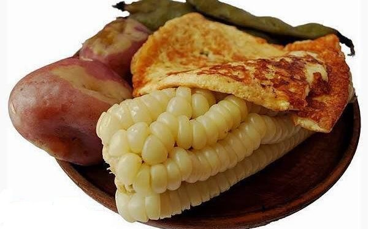
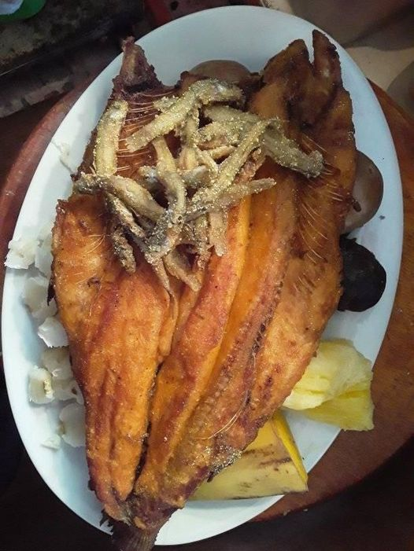

Es un plato que consiste en queso, ají amarillo, habas, hierba buena y papa.

Para la carbonara es un plato que tiene cebolla, pimentón, tomates, zapallo, papas, choclos.

En este plato se debe de contar con papas medianas, maní tostado, vainas, cebolla, ajo, perejil, lechuga, huevos duros, queso, aceitunas.

Choclos, habas, papas medianas, queso frito y llajua (opcional).

Es uno de los platos más representativos de la ciudad de La Paz, lleva trucha, pejerey o mauri, limones, cilantro, harina amarilla, sal y condimentos.